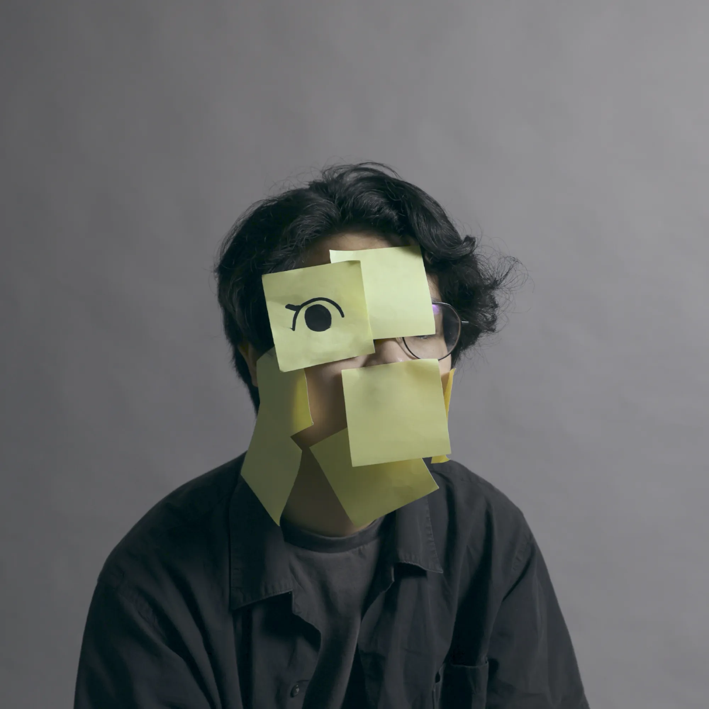

Hi!
I'm Fredrick, a freshly graduated communication designer with a passion for creating cohesive brand experiences that live in both digital and physical worlds.
Recently trained at the School of Design at Hong Kong Polytechnic University, I believe design is more than just aesthetics. It's about how things work, feel, and connect with people.
When I'm not designing, I enjoy capturing moments with my camera and experimenting with new recipes in the kitchen. These passions keep me inspired.